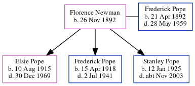

Elsie Louisa Mary Pope 1915 - 1969
[ Home ] | [ Calendar ] | [ Surnames Index ] | [ Errors ] | [ Family History ]A dressmaker and the eldest of 3 children of Frederick Pope (a fruiterer) and Florence Newman, Elsie Pope, the fourth cousin once-removed on the father's side of Nigel Horne, was born in Brentford, London, England on 10 Aug 19151,2,3.
During her life, she was living at 86 District Road, Sudbury, London, England on 29 Sept 19391 - less than a mile from her father Frederick Ernest who was living at 86 District Road and in 1969 (the same place as her father had been living on 29 Sept 1939).
She died on 30 Dec 1969 in Brent, London, England3,4.
Parents
- Frederick Ernest was born on 21 Apr 1892
- Florence Caroline was born on 26 Nov 1892
Citations
- 1939 Register - Findmypast (was the daughter of the head of the household)
- England & Wales births 1837-2006 - Findmypast
- England & Wales deaths 1837-2007 - Findmypast
- England & Wales Government Probate Death Index 1858-2019 - Findmypast
Media
England & Wales deaths 1837-2007 - BMD/D/1969/4/AZ/001018/045
England & Wales births 1837-2006 - BMD/B/1915/3/AZ/001112/058
England & Wales Government Probate Death Index 1858-2019 - GBOR/GOVPROBATE/C/1970-1970/00180168
1939 Register - TNA-R39-0946-0946I-016-29
Family Tree
Map
Generated by ged2site. Last updated on Jul 3, 2024
Known Issues
Parent Frederick is listed in the residence for 1920, but this child is not
Residence record for 1969 contains no citation